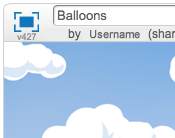

Introduction:
In this project, children will learn how to use variables to store data in their programs.
Resources
For this project, Scratch 2 should be used. Scratch 2 can either be used online at jumpto.cc/scratch-on or can be downloaded from jumpto.cc/scratch-off and used offline.
You can find a completed version of this project online, or it can be downloaded by clicking the ‘Download Project Materials’ link for this project, which contains:
- Balloons.sb2
Learning Objectives
- Variables;
- Random numbers;
- Cloning sprites.
Challenges
- “More randomness” - using random numbers;
- “More objects” - applying skills to create another game object.
Frequently Asked Questions
- If children find it difficult to pop balloons without dragging them around, they can play the game in fullscreen mode, in which balloons aren’t draggable.
